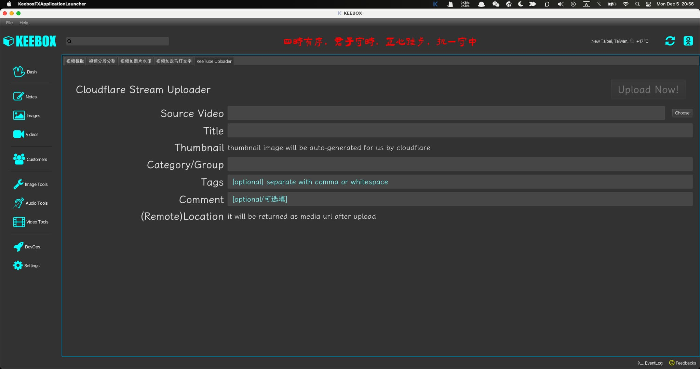

使用Java的TusClient上传视频到Cloudflare的排错历程
王福强

本来就想写个简单的工具上传视频到Cloudflare Stream，没想到几个小时过去了…
Debug is a fucking time-killer.
故事是从返回的400状态码开始的：
unexpected status code (400) while uploading chunk
当然，以上信息来自Java的TusClient抛出的异常，追到代码里其实就是，状态码如果是400的情况，肯定会抛出这个以上。
400状态码的意思是Bad request，那意思是我提交的上传请求有问题呗？ 按理说我按照你Cloudflare Stream的官方文档写的，应该没啥问题啊，so let‘s Google it.
发现cloudflare论坛里搜到的帖子大多没啥鸟用，虽然都是400状态码的表象。
首先检查的是认证的header这些没问题，之后，我就一个header一个header的debug啊！参考cloudflare其他语言的API代码疯狂实验各种参数，无果…
再搜，再翻找搜索结果(是的，这个工作就算是ChatGPT也帮不了你)，发现了这个： https://github.com/tus/tus-java-client/issues/66, tnnd, 原来是cloudflare的server端不兼容tus导致400， 日！ 或者说，tusclient的实现中做了fallback，没有按照最基础的交互协议走，因为有些JDK版本的http connection不支持PATCH方法。（底层库多么重要啊！ 有缺陷严重影响一大片。 这也说明了，没有人和机构能干好所有的事情，开放让不同人和机构做好各自擅长的事儿不好吗？）
怎么办？ 我就想用Java，我又不想自己写一个Tus的Java Client（否则，那不就绕进去了吗？ 我原本就想写个简单的上传客户端），我只能寻求“黑”魔法， 然后让我找到了：https://stackoverflow.com/questions/25163131/httpurlconnection-invalid-http-method-patch
当然，还是没现成的，老的Java reflection代码在Java19的JDK下显然早就被封杀了，所以，我们这样的老狗也得用新技能做老事情，比较nasty，但it works：
private def hackHttpURLConnectionByAppendingHttpMethodPatch(): Unit = {
try {
val methodsField: Field = classOf[HttpURLConnection].getDeclaredField("methods")
methodsField.setAccessible(true)
val lookup = MethodHandles.privateLookupIn(classOf[Field], MethodHandles.lookup());
val MODIFIERS = lookup.findVarHandle(classOf[Field], "modifiers", classOf[Int])
if (Modifier.isFinal(methodsField.getModifiers)) {
MODIFIERS.set(methodsField, methodsField.getModifiers & ~Modifier.FINAL)
}
methodsField.set(null /*static field*/ , Array("GET", "POST", "HEAD", "OPTIONS", "PUT", "DELETE", "TRACE", "PATCH"))
} catch {
case t: Throwable => logger.warn(ExceptionUtils.getStackTrace(t))
}
}然后，在调用TusClient做事之前的任何合适的时点调用一次这个方法就可以了。
哦，对了，最后一个关键点，同时记得在执行java命令的之后加上(如果是在Intellij IDE里跑，驾到VM参数上）：
--illegal-access=permit --add-opens java.base/java.net=ALL-UNNAMED --add-opens java.base/java.lang.reflect=ALL-UNNAMED 好啦，大半天的摸索分享给你，希望你用不到，毕竟TusClient后面应该会升级HTTP的实现方案，现在的实现有点儿太封闭了，还没法加interceptor拦截HTTP请求，害得我只能正则表达式从各种周边信息里提取元数据，也是醉了，不过这是题外话；）
Anyway，feedback loop matters！ 快速反馈是快速拿结果的基础。
「为AI疯狂」星球上，扶墙老师正在和朋友们讨论有趣的AI话题，你要不要⼀起来呀？^-^
这里
- 不但有及时新鲜的AI资讯和深度探讨
- 还分享AI工具、产品方法和商业机会
- 更有体系化精品付费内容等着你，加入星球(https://t.zsxq.com/0dI3ZA0sL) 即可免费领取。(加入之后一定记得看置顶消息呀！)

存量的时代，省钱就是赚钱。
在增量的时代，省钱其实是亏钱。
避坑儿是省钱的一种形式，更是真正聪明人的选择！
弯路虽然也是路，但还是能少走就少走，背后都是高昂的试错成本。
订阅「福报」，少踩坑，少走弯路，多走一步，就是不一样的胜率！